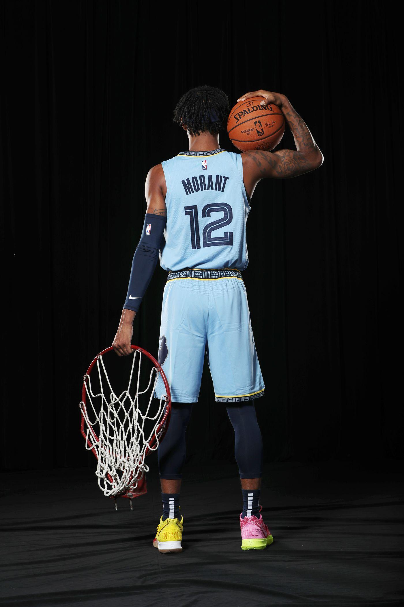

Biography
Ja Morant, born on August 10, 1999, in Dalzell, South Carolina, is an American professional basketball player for the Memphis Grizzlies of the NBA. Morant played college basketball for the Murray State Racers before being drafted 2nd overall in the 2019 NBA Draft. Known for his explosive athleticism and playmaking ability, Morant quickly became one of the most exciting young players in the league.
Career Stats
| Season | Games Played | Points Per Game | Assists Per Game | Rebounds Per Game |
|---|---|---|---|---|
| 2019-2020 | 67 | 17.8 | 7.3 | 3.9 |
| 2020-2021 | 63 | 19.1 | 7.4 | 4.0 |
| 2021-2022 | 57 | 27.4 | 6.7 | 5.7 |
Career Highlights
- NBA All-Star (2022)
- NBA Rookie of the Year (2020)
- Led Memphis Grizzlies to multiple playoff appearances
- Known for jaw-dropping dunks and high-flying plays
- One of the most electrifying players in the NBA today
Contact
If you'd like to get in touch with Ja Morant or his team, feel free to reach out through the official Memphis Grizzlies website or social media accounts.